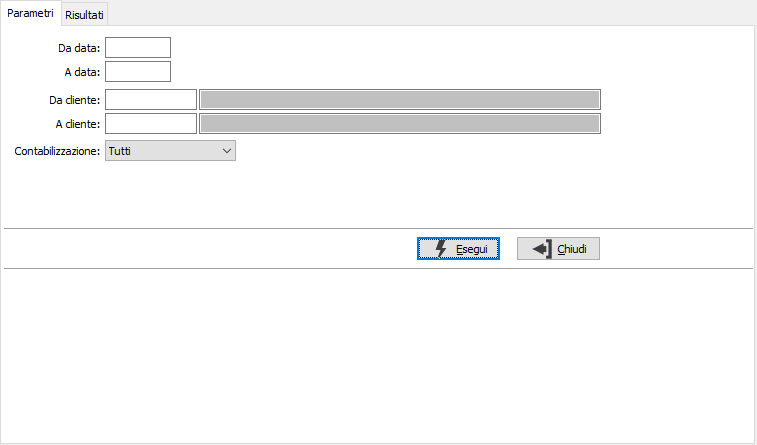
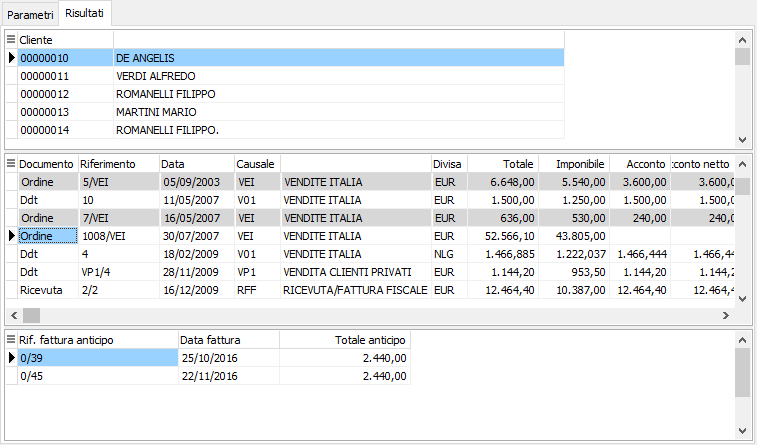

Analisi acconti
Il programma, presente nel menù di ordini, Ddt e fatture clienti, permette di analizzare gli acconti registrati a fronte di tali documenti.
L’analisi può essere effettuata per data e per cliente, selezionando tutti gli acconti, solo quelli contabilizzati o solo quelli da contabilizzare.

Nei risultati vengono visualizzati per cliente i documenti su cui sono presenti gli acconti e vengono visualizzati con sfondo colorato i documenti il cui acconto risulta contabilizzato sul documento stesso. Nella colonna “Acconto” viene riportato il totale dell’acconto presente sul documento, mentre nella colonna “Acconto netto” viene riportato il totale dell’acconto al netto di acconti già contabilizzati sui documenti evasi dal documento stesso. Per gli ordini che hanno anticipi è presente il totale degli anticipi, l'imponibile residuo ed il residuo totale, relativo al totale ordine rispetto al totale delle fatture di anticipo; è presente anche il dettaglio delle fatture di anticipo associate all'ordine (sulla griglia degli anticipi il doppio click richiama il documento).
Tramite i bottoni presenti nella tool bar o tramite gli appositi tasti funzione, è possibile stampare l’analisi effettuata.